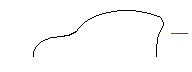
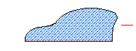

|
Area Property |
Specifies the enclosed area of an arc, circle, ellipse, hatch, lightweight polyline, polyline, region, or planar-closed spline.
Signature
object.Area
object
Arc, Circle, Ellipse, Hatch, LightweightPolyline, Polyline, Region, Spline
The objects this property applies to.
Area
Double; read-write for Circle objects, read-only for all others
The area of the object specified in square drawing units.
Remarks
Hatch objects:
Note To access this property, use the IAcadHatch2 interface.
Wide polylines:
The area is defined by the center of the width.
Regions:
The area equals the combined area for all the objects in the region.
Open objects such as arcs, spline curves, and open polylines:
The area is computed as though a straight line connects the start point and endpoint.
 |
|
 |
|
| Comments? |